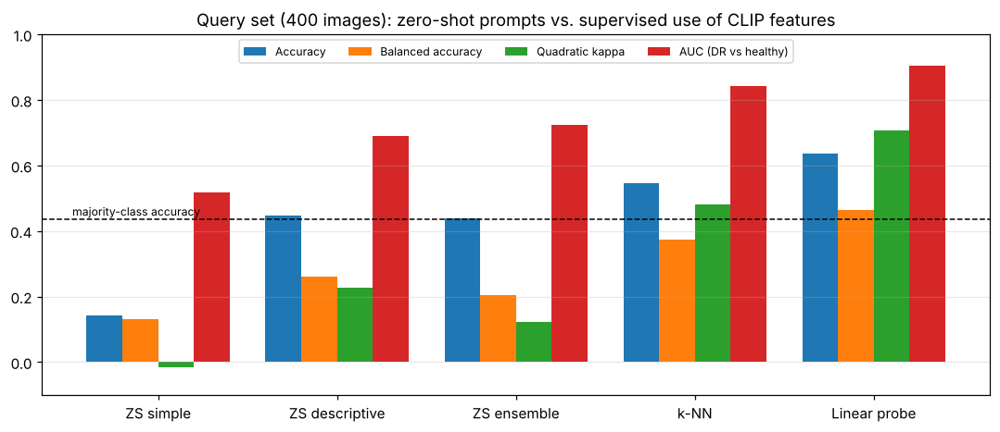

بخش ۶ · مقایسه با روشهای نظارتشده
ضعف از رمزگذار تصویر است یا از تطابق متن؟
| AUC | κ | Accuracy | روش |
|---|
| 0.691 | 0.23 | 44.8% | Zero-Shot (B) |
| 0.842 | 0.48 | 54.5% | k-NN, k = 10 |
| 0.905 | 0.71 | 63.5% | Linear Probe |
k-NN و Linear Probe از برچسبهای Gallery استفاده میکنند. بردارهای تصویر اطلاعات بیماری را دارند؛ گلوگاه، تطابق متن عمومی با تصویر پزشکی است.

nn_idx = np.argsort(-(emb_q @ emb_g.T), axis=1)[:, :10] # k-NN
probe = LogisticRegression(C=10, max_iter=2000).fit(emb_g, y_g) # linear probe
CLIP · DeepDRiD